01
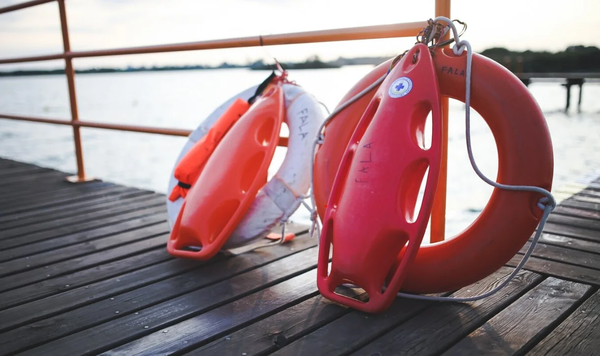
Life-Saving Appliances (LSA)
SOLAS inspection, servicing and load-testing of lifeboats, liferafts, davits and survival equipment.
Explore service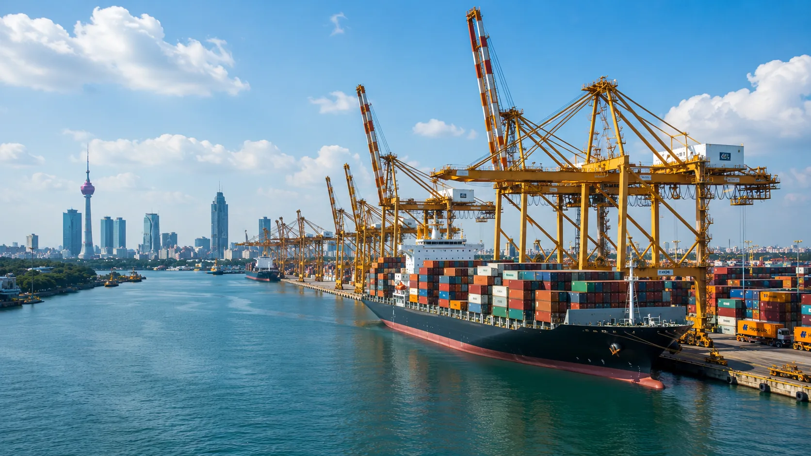


Serving Sri Lanka · Colombo · Galle · Hambantota
LSA and FFA servicing, calibration and SOLAS-approved safety products, engine overhaul and ship management for vessels calling at Sri Lankan ports.
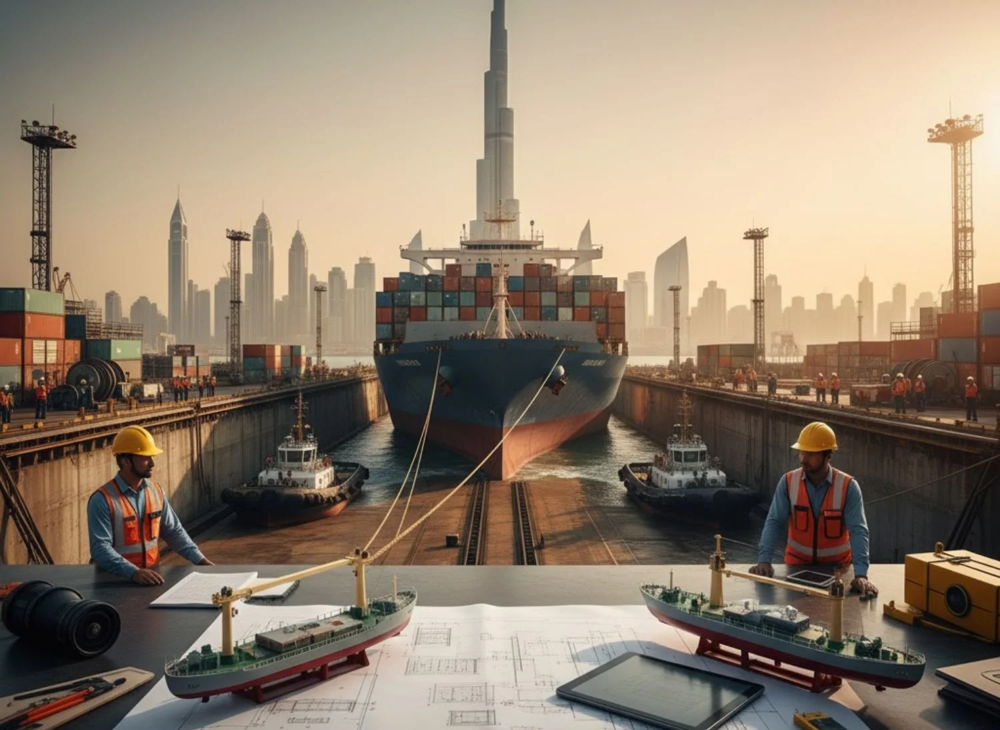
About ARCSHIP in Sri Lanka
ARCSHIP Management & Chartering (Pvt) Ltd supports shipowners, operators and charterers with in-house marine engineering and safety-equipment servicing, delivered to vessels calling at Sri Lanka’s commercial ports on the Indian Ocean.
From full technical and crew management to LSA and FFA servicing, engine overhaul, calibration and SOLAS-approved safety provisions, work is carried out under one QHSE system and to the standards of leading classification societies and flag states. ARCSHIP’s Sri Lanka operations are run from Colombo, part of an international ARCSHIP network working to ISO-certified management systems.
What we do
Seven core service lines covering the technical, safety and compliance needs of vessels operating in Sri Lankan waters.

SOLAS inspection, servicing and load-testing of lifeboats, liferafts, davits and survival equipment.
Explore service
Inspection, refilling and pressure-testing of fixed and portable firefighting and detection systems.
Explore service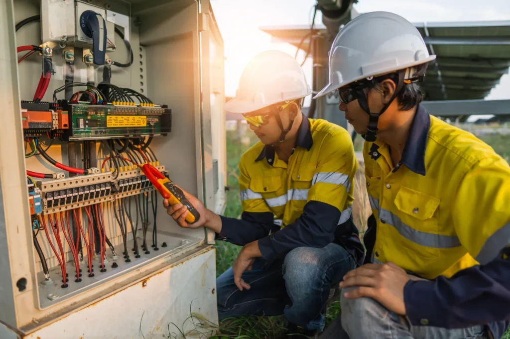
Calibration of navigation, safety and monitoring instrumentation to class and flag requirements.
Explore service
SOLAS-approved emergency drinking water and emergency food rations for lifeboats and liferafts.
Explore service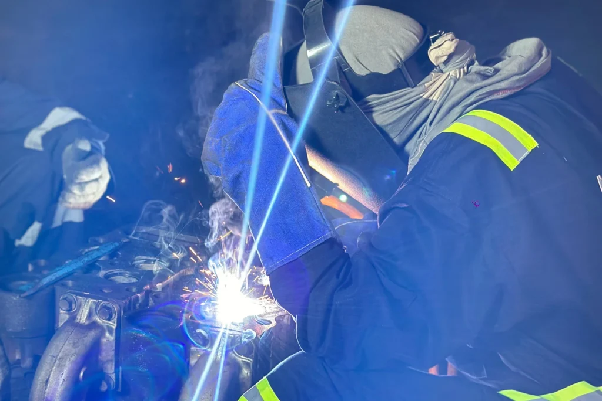
Planned and emergency overhaul of main engines, auxiliaries and critical rotating machinery.
Explore service
Pump overhauling, cooler servicing, pressure testing and marine fabrication, afloat or in dry dock.
Explore service
Technical, crew and commercial management that keeps vessels compliant, efficient and trading.
Explore serviceVessels we support
Oil & Chemical TankersOffshore Support Vessels Container VesselsGeneral Cargo
Container VesselsGeneral CargoPort coverage
ARCSHIP attends vessels at Sri Lanka’s principal ports and anchorages, from the container gateway of Colombo and the southern harbour of Galle to Hambantota in the deep south and Trincomalee on the east coast.
Why ARCSHIP
Servicing, inspection and documentation aligned to SOLAS, MARPOL, the LSA/FSS Codes and flag-state rules, inspection-ready every port call.
Mobilised teams and pre-positioned spares keep survey, repair and safety work inside the laycan, minimising off-hire.
Ship management, engine overhaul, LSA/FFA servicing and calibration under a single technical contract and QHSE system.
Work carried out to the standards of leading classification societies and original-equipment makers.
A global ARCSHIP network delivering locally to vessels at Sri Lanka’s ports on the Indian Ocean.
Condition reports, test certificates and planned-maintenance records that protect asset value and resale.
Certifications & approvals
Management systems certified to international ISO standards, with marine engineering delivered to classification-society requirements.
 ISO 9001:2015Quality Management System
ISO 9001:2015Quality Management System ISO 14001:2015Environmental Management
ISO 14001:2015Environmental Management ISO 45001:2018Occupational Health & Safety
ISO 45001:2018Occupational Health & SafetyWorking to the standards of leading classification societies
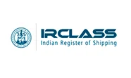
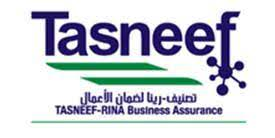
Projects & capability
A selection of ARCSHIP marine engineering and safety-servicing operations.
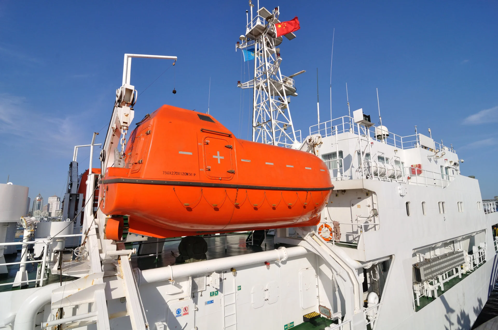

Recognition
ARCSHIP was named a finalist at The Maritime Standard Awards 2025, a regional benchmark for ship management and marine services across the Middle East and Indian Subcontinent.
Work with ARCSHIPTrusted by
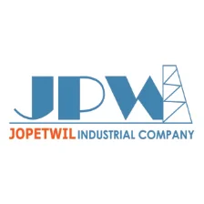
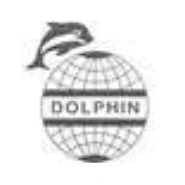
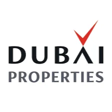
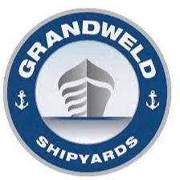
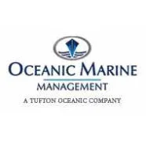
Blog
What to plan for when arranging afloat repairs, dry-docking support and class-driven steel and machinery work at Sri Lankan ports.
How life-saving and fire-fighting appliance servicing keeps vessels SOLAS-compliant, and what a Sri Lankan port-call inspection covers.
A breakdown of the technical, crew, commercial, safety and environmental functions that keep a managed vessel trading.
FAQ
ARCSHIP attends vessels at Sri Lanka’s principal commercial ports, Colombo and Galle on the west and south coasts, Hambantota in the south and Trincomalee on the east, together with anchorages and offshore positions in Sri Lankan waters.
Yes. Life-saving appliance and fire-fighting appliance servicing is carried out to SOLAS, the LSA and FSS Codes and the relevant flag-state and classification-society requirements, with test certificates issued on completion.
Teams are mobilised to meet the vessel’s schedule. Where scope is advised in advance, spares and test equipment are pre-positioned so inspection, repair and re-certification are completed within the port stay.
ARCSHIP works to the standards of leading classification societies including Lloyd’s Register, Bureau Veritas, ABS, Korean Register, RINA, ClassNK, the Indian Register of Shipping, CCS and Tasneef. Approval scope by society is confirmed on request.
Oil and chemical tankers, offshore support vessels, container ships, bulk carriers and general cargo vessels, among others.
Send the vessel particulars, port and scope of work through the contact form or WhatsApp. A technical response with scope and indicative timeline follows.
Send your vessel particulars, port and scope, we’ll respond with a technical proposal and indicative timeline.